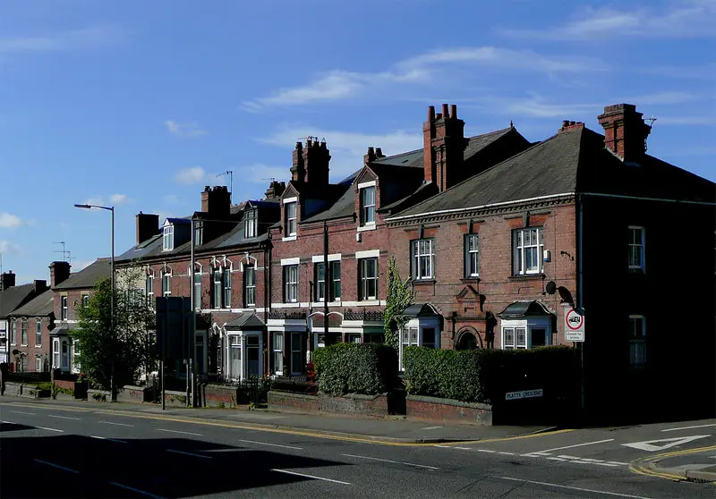

Recent cases
- Littleworth Avenue, Woodsetton, 6 November 2026. Plants were found across two rooms after numerous reports of suspicious activity. No arrests had been made at the time of reporting.
- Tetnall Street, Dudley, July 2026. More than 100 plants were found in one room lined with sheeting and LED lights.
- Dudley Road, Sedgley, January 2026. Around 100 plants were found in a bedroom, and the electricity meter had been bypassed. The occupier was later charged with production of cannabis and abstracting electricity.
Small grows, real damage
A one or two-room grow sounds minor, but the damage is similar in kind:
- the meter or wiring is often tampered with, as in the Sedgley case
- the room has been sealed, so damp and mould build up quickly
- sheeting, staples and screws damage walls and ceilings
The clean-up is smaller, but the electrical checks and the paperwork for your insurer are the same.
Neighbours and reputation
Many Dudley finds follow reports from neighbours. Once the property is released, neighbours will notice the clean-up. A discreet firm, unmarked vans where possible, and a short, polite word with immediate neighbours about when work will happen usually helps.
Licensing
Mandatory HMO licensing applies across the borough. Check with Dudley Council's private sector housing team if you are unsure whether your property needs a licence.
One room, same paperwork
It is tempting to treat a one-room grow as a weekend job. The trouble is that the expensive parts do not scale down much:
- The electrics need the same make-safe and full test whether one room or five were used. If the meter was bypassed, as in the Sedgley case, expect the supplier to be involved.
- The insurer will want the same evidence: crime reference, dated photos, itemised invoices, waste transfer notes.
- The deposit claim, if there is one, needs the same before-and-after evidence.
What does scale down is the waste and the decorating. A small grow may be cleared in a day.
A borough of separate towns
Dudley borough covers Dudley itself, Sedgley and Coseley, Brierley Hill, Kingswinford, Stourbridge, Amblecote, Lye and Halesowen. Halesowen uses B62 and B63, not DY. Stourbridge is DY8 and DY9. Some DY postcodes belong to other councils: DY4 (Tipton) is Sandwell, and DY10 to DY14 are in Worcestershire and Shropshire. We match specialists to the postcode.
When neighbours made the report
Several local finds followed reports from neighbours. That has two consequences:
- Neighbours are watching. When work starts, a polite note through the doors either side saying when the clear-out is and who to contact helps a lot.
- They may have seen things you need. Dates when activity started, vans, visitors. If you are claiming on insurance or against the tenant, a short written account from a neighbour can help. Ask, do not push.
Who to contact in Dudley
- West Midlands Police: 101.
- 105 for the meter and supply.
- Dudley Council: private sector housing, for licensing and housing standards questions.
- Crimestoppers: 0800 555 111.
Questions landlords ask
It was only one room. Do I really need an electrician?
Yes. Growers usually run extra circuits or tamper with the supply, and a one-room grow in Sedgley had a bypassed meter. Have a registered electrician make safe and test the whole installation before anyone uses it.
Do you cover Halesowen and Stourbridge?
Yes, both are in Dudley borough. Halesowen uses B62 and B63 postcodes. Give us the full postcode.
Should I tell the neighbours about the clean-up?
A short, polite note saying when work will happen and who to contact usually helps. You do not need to give details of what was found.
What we can arrange in Dudley
Guides for Dudley landlords
Other areas: Birmingham, Wolverhampton, Coventry, Walsall, Sandwell.